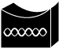
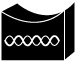
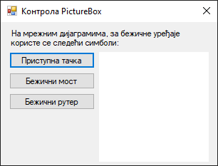
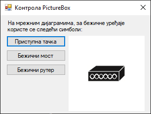
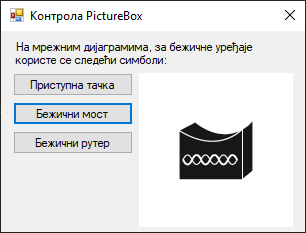
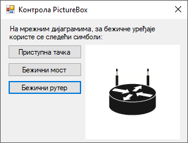

Оквир за слику¶
Контрола оквир за слику (енгл. PictureBox) дефинисана је у класи
PictureBox у именском простору System.Windows.Forms, односно склопу
System.Windows.Forms.dll. Класа PictureBox наслеђује класу Control, па
због тога оквир за слику има основна својства, догађаје и методе као и остале
контроле у Windows Forms App (.NET Framework) пројектима.
Детаљан опис својстава, догађаја и метода класе PictureBox налази се у
званичној документацији.
Има их много и нема потребе наводити их све на овом месту.
Контрола оквир за слику користи се за учитавање, приказивање и манипулацију
слика. Слику можеш учитати из фајла, ресурса или са URL-а користећи својство
Image. Помоћу својства SizeMode можеш подесити начин на који се слика
приказује у оквиру за слику, постављајући следеће вредности:
Normal: Подразумевана вредност, слика се приказује у оригиналној величини.StretchImage: Слика се „развлачи” да попуни оквир за слику.AutoSize: Оквир за слику се аутоматски прилагођава величини слике.CenterImage: Слика се центрира у оквиру за слику.Zoom: Слика се пропорционално „развлачи” тако да стане у оквир за слику без губитка пропорција.
Оквир за слике може да учита слику формата битмапе (BMP), иконе (ICO), Windows Metafile (WMF), JPEG, GIF или PNG. Ако је неопходно да слика буде транспарентна, оквир за слику подржава транспарентност у следећим графичким форматима:
32-bit PNG,
8-bit PNG,
32-bit BMP,
32-bit TIFF или
GIF.
Ако желиш да учиташ слику великих димензија, води рачуна о меморијским
ресурсима. Можеш да користиш методу Dispose() за ослобађање меморије након
што слика више није потребна. Ако учитаваш слику са интернета, корисно је да
користиш асинхроне методе попут LoadAsync() како би избегао да програм
постане неактиван док се чека да се слика учита.
Нека је задатак да креираш једноставну GUI апликацију за демонстрацију рада са
контролом PictureBox. При врху форме треба да се налази лабела са текстом:
„На мрежним дијаграмима, за бежичне уређаје користе се следећи симболи:”. Испод
лабеле треба да поставиш три дугмета са текстом…
Приступна тачка
Бежични мост
Бежични рутер
…и оквир за слику. Иницијално, оквир за слику треба да буде празан и треба да има белу позадину. Када корисник кликне на неко од понуђених дугмади, у средини оквира за слику треба да се прикаже једна од три понуђене слике:
 

Слике, преузете са странице Network Topology Icons, различитих су димензија.
Креирај нови Windows Forms App (.NET Framework) пројекат са формом димензија 320×240, постави контроле као на слици…

…и дај им нека смислена имена. Својство BackColor треба да буде промењено
на White, како би позадина оквира била бела, а својство SizeMode на
CenterImage, како би се слике приказивале у средини оквира за слику.
Под претпоставком да си ископирао слике у исти директоријум у којем се налази и
извршни фајл, дефиниши догађај Click за прво дугме:
private void btnPristupna_Click(object sender, EventArgs e)
{
Bitmap pristupnaTacka = new Bitmap("waccesspoint.jpg");
pcbUredjaj.Image = pristupnaTacka;
}
Сада, кликом на прво дугме креира се објекат pristupnaTacka типа Bitmap, па
се исти додељује својству Image оквира за слику pcbUredjaj:

Исто можеш урадити и за друго и треће дугме, па ако корисник кликне на друго
дугме, својству Image оквира за слику pcbUredjaj биће додељена друга
слика…

…односно, ако кликне на треће дугме, својству Image оквира за слику
pcbUredjaj биће додељена трећа слика:

Шта није у реду са овим решењем? Ако корисник кликне узастопно десет пута
на прво дугме, десет пута ће креирати нови објекат у меморији. Ово може да буде
нарочито опасно када су слике великих димензија. Решење проблема је једноставно -
коришћењем методе Dispose():
private void btnPristupna_Click(object sender, EventArgs e)
{
if (pcbUredjaj.Image != null)
{
pcbUredjaj.Image.Dispose();
pcbUredjaj.Image = null;
}
Bitmap pristupnaTacka = new Bitmap("waccesspoint.jpg");
pcbUredjaj.Image = pristupnaTacka;
}
Прво се проверава да ли већ постоји слика у оквиру за слику. Ако постоји, она
се ослобађа позивањем Dispose() методе. На овај начин, корисник може да
кликне на било које дугме колико год пута жели. Сваким кликом, ако већ постоји
објекат додељен својству Image, тај објекат ће бити уништен. Након такве
провере може се креирати нови објекат и доделити својству Image.
Још боље решење је да се слике дефинишу као поља у класи Form1. Ово решење
омогућава учитавање слика једном и коришћење истих инстанци слика касније, без
потребе за сталним учитавањем и ослобађањем ресурса. Цео програм могао би да
изгледа овако:
using System;
using System.Drawing;
using System.Windows.Forms;
namespace OkvirZaSliku
{
public partial class Form1 : Form
{
private Bitmap pristupnaTacka = new Bitmap("waccesspoint.jpg");
private Bitmap bezicniMost = new Bitmap("wbridge.jpg");
private Bitmap bezicniRuter = new Bitmap("wrouter.jpg");
public Form1()
{
InitializeComponent();
}
private void btnPristupna_Click(object sender, EventArgs e)
{
pcbUredjaj.Image = pristupnaTacka;
}
private void btnMost_Click(object sender, EventArgs e)
{
pcbUredjaj.Image = bezicniMost;
}
private void btnRuter_Click(object sender, EventArgs e)
{
pcbUredjaj.Image = bezicniRuter;
}
private void Form1_FormClosing(object sender, FormClosingEventArgs e)
{
pristupnaTacka.Dispose();
bezicniMost.Dispose();
bezicniRuter.Dispose();
}
}
}
Добра пракса је да ресурсе типа Bitmap, када више нису неопходни, експлицитно
ослободиш. Ако не ослободиш ресурсе, може доћи до тзв. цурења меморије. У
примеру изнад то је урађено у догађају FormClosing. Други начин да ослободиш
ове ресурсе је, да уместо дефинисања FormClosing догађаја, у другом делу
парцијалне класе Form1, у фајлу Form1.Designer.cs, пронађеш и модификујеш
методу Dispose() на следећи начин:
/// <summary>
/// Clean up any resources being used.
/// </summary>
/// <param name="disposing">true if managed resources should be disposed; otherwise, false.</param>
protected override void Dispose(bool disposing)
{
if (disposing)
{
pristupnaTacka?.Dispose();
bezicniMost?.Dispose();
bezicniRuter?.Dispose();
if (components != null)
{
components.Dispose();
}
}
base.Dispose(disposing);
}